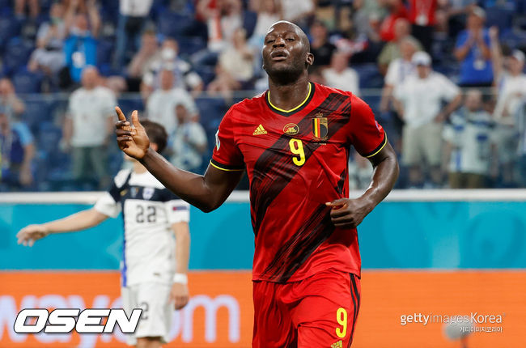

UEFA Euro 2020
The 2020 UEFA European Football Championship, commonly referred to as 2020 UEFA European Championship, UEFA Euro 2020, or simply Euro 2020, is the 16th UEFA European Championship, the quadrennial international men's football championship of Europe organised by the Union of European Football Associations (UEFA). tournament, being held in 11 cities in 11 UEFA countries, was originally scheduled from 12 June to 12 July 2020, but was postponed due to the COVID-19 pandemic in Europe and rescheduled for 11 June to 11 July 2021. It retains the name "UEFA Euro 2020". Portugal are the defending champions, having won the 2016 competition in France, and the video assistant referee (VAR) system makes its debut at the European Championship in this tournament.